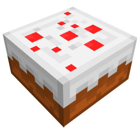

История игры
Minecraft (от англ. mine — «шахта; добывать» + craft — «ремесло; создавать») — компьютерная инди-игра в жанре песочницы, созданная шведским программистом Маркусом Перссоном и выпущенная его компанией Mojang AB. Перссон опубликовал начальную версию игры в 2009 году; в конце 2011 года была выпущена стабильная версия для ПК Microsoft Windows, распространявшаяся через официальный сайт. В последующие годы Minecraft была портирована на Linux и macOS для персональных компьютеров; на Android, iOS и Windows Phone для мобильных устройств; на игровые приставки PlayStation 4, Vita, VR, Xbox One, Nintendo 3DS, Switch и Wii U. В 2014 году корпорация Microsoft приобрела права на Minecraft вместе с компанией Mojang AB за 2,5 миллиарда $. Студия 4J портировала игру на игровые приставки, а Xbox Game Studios разработала мультиплатформенную версию Minecraft и специальное издание игры для образовательных учреждений.
Перссон написал Minecraft на Java с использованием библиотеки графического вывода LWJGL, черпая идеи из таких игр, как Dwarf Fortress, Dungeon Keeper и Infiniminer (англ.)рус. Minecraft даёт в распоряжение игрока процедурно генерируемый и изменяемый трёхмерный мир, полностью состоящий из кубов — его можно свободно перестраивать, создавая из этих кубов сложные сооружения — эта особенность делает игру схожей с различными конструкторами, такими как LEGO. Minecraft не ставит перед игроком каких-либо конкретных целей, но предлагает ему свободу действий: например, игрок может исследовать мир, добывать полезные ископаемые, сражаться с противниками и многое другое. Игра включает в себя дополнительные режимы, например, «выживание», где игроку нужно самому добывать ресурсы, и «творчество», где у игрока эти ресурсы есть в неограниченном количестве. Механика «редстоуна» (англ. Redstone) позволяет создавать в игре сложные логические схемы — тем самым игра может служить виртуальным конструктором для программистов и инженеров.
Minecraft получила всеобщее признание среди игровой прессы и множество наград. Критики выделили такие основные достоинства, как реиграбельность, минималистичный дизайн, динамичный саундтрек и большая свобода творчества, ограниченная лишь фантазией игрока; недостатками они посчитали наличие недоработанных предметов и сложности с созданием сетевой игры, а также отсутствие в игре режима обучения. Разработчики устранили эти недостатки в последующие годы. На весну 2021 года было продано более 238 миллионов копий на всех платформах, что делает Minecraft самой продаваемой игрой в истории (англ.)рус., 140 миллионов игроков запускали игру хотя бы раз в месяц. В декабре 2021 года Minecraft стала первой и, на данный момент, единственной видеоигрой, набравшей 1 триллион просмотров на YouTube.В популяризации и коммерческом успехе Minecraft большую роль сыграли пользовательский контент, в том числе видеоролики, распространяемые через YouTube, и множество сторонних модификаций. На сегодняшний день Minecraft представляет собой целую франшизу, включающую в себя, помимо основной игры, такие игры как Minecraft: Story Mode, Minecraft Earth и Minecraft Dungeons.
Снэпшоты
Эта статья содержит информацию об основных обновлениях Java Edition. Для предварительных версий см. История версий (Java Edition) предварительные сборки. В данной статье приведён полный список изменений в Minecraft: Java Edition. Сверху — самые новые, снизу — старые.
Minecraft 1.19 Wild Update с Хранителем (Warden) и Тёмными подземельями
Minecraft 1.18 Caves & Cliffs (2 часть)
Minecraft 1.17 Caves & Cliffs (1 часть)
Minecraft 1.16 Nether Update
Minecraft 1.15 Buzzy Bees
Minecraft 1.14 Village and Pillage
Minecraft 1.13 Update Aquatic
Minecraft 1.12 World of Color Update
Minecraft 1.11 Exploration Update
Minecraft: Java Edition тестируется с 10 мая 2009 года по сей день.
